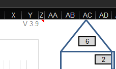

| Werkt onder | - Excel-2019, Excel-Prof-2021, Excel-365 - Libre Office Calc 6.4.3.2 7.4.6 - Google (adrescheck conditional formatting werkt niet) |
|---|---|
| Werkt niet onde | - Open Office Calc 4.1.5 4.1.14 |
Het versienummer is te vinden op het Basisblad In cell Y1 |
 |
|---|---|